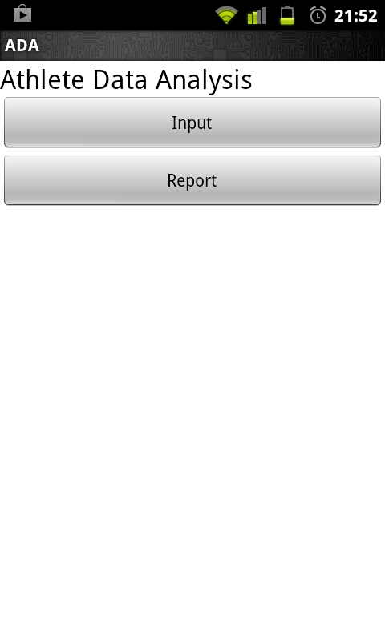
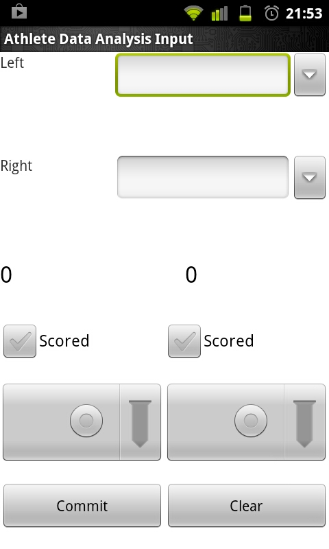
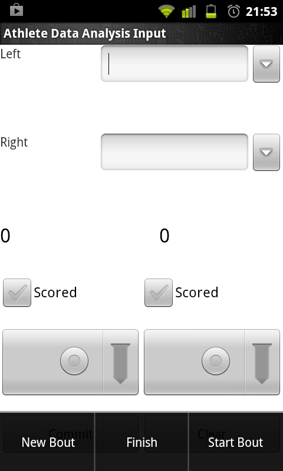
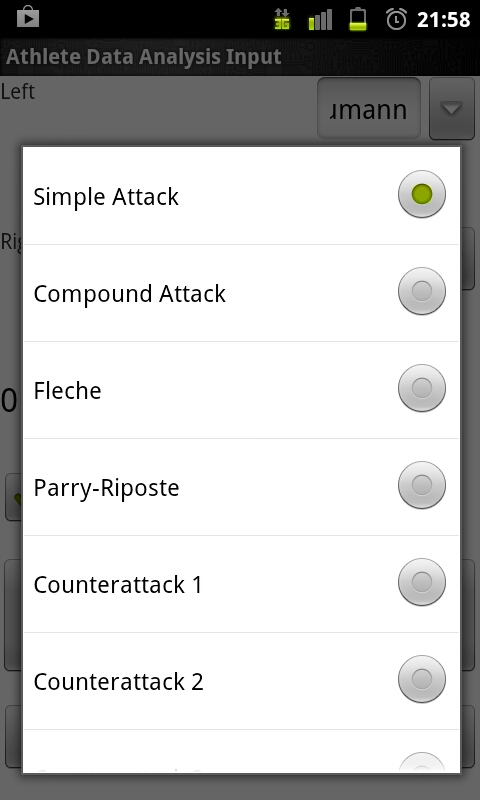
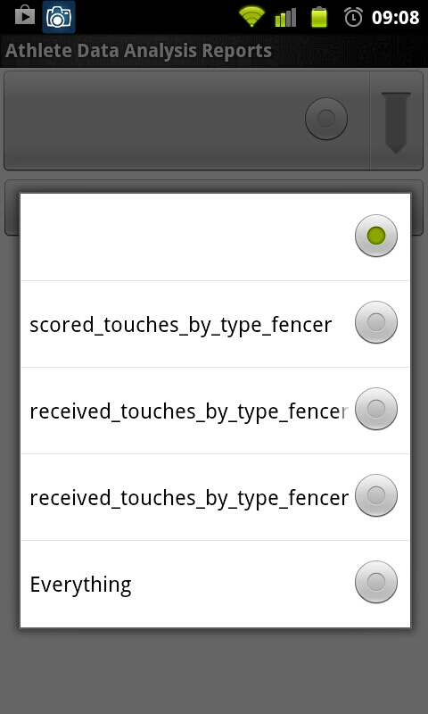
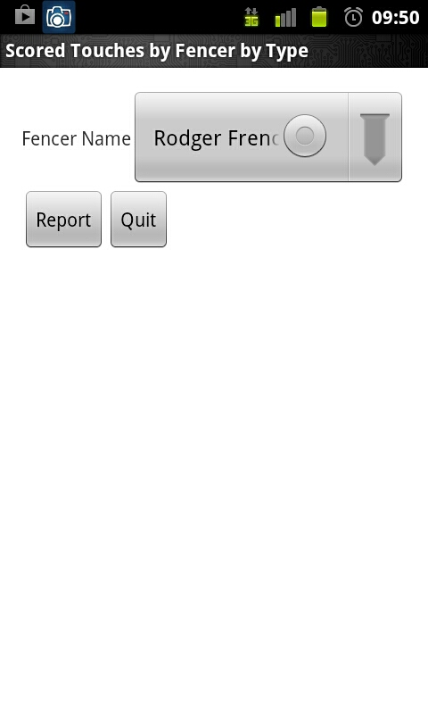
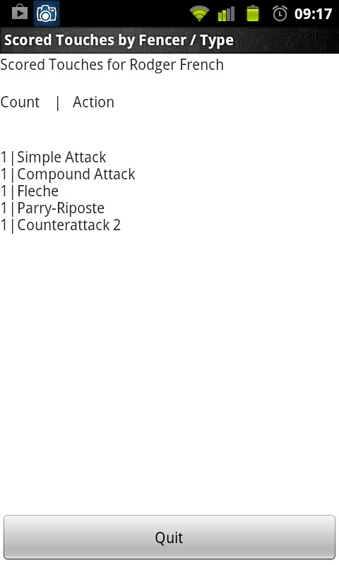

The Athlete Data Analysis application ("ADA") is designed to help fencers understand what happens during their bouts. By using it to gather counts of actions which result in scored touches, you can understand what things you are doing work, and what things others do work against you. This can help guide you in your training when you're not competing.
Currently, ADA is available from the ADA beta test site. ADA is not currently on the Google Play Store, so you'll need to enable the Unknown Sources checkbox in your Android device's Applications or Security settings. After you've done this, you can put the beta URL into your phone's browser. Your browser will download the ADA package and put a message in your Android Notifications about it (the same place where your calendar puts reminders about things on your schedule). Pull down the Notification screen and touch the ADA download notification to load the software. If you get a message asking which software should handle the ADA.apk file, you want the Android Package Installer.
When you start ADA by touching the ADA icon in your Applications screen, you will see the root menu, which
consists of two buttons, as:

Touch the Input button to bring up the input screen:

Enter the names of the two fencers in the bout in the first pair of boxes. You can type a name here if the fencer is new to the program, or touch the downarrow on the right side of the box to scroll through a list of names already in ADA's database.
When the director or a fencer says ''ready, Fence'', start recording bout information by bringing up the context menu and touching the Start Bout button:

The Context Menu is the menu you can bring up in Android with the menu icon or button, typically indicated with a series of horizontal lines. This records the time that the bout started in ADA's database, so that later you can ask ADA for things like ''How soon did the first touch occur when my fencer got it?''.
When one or both fencers score a touch, the action will stop. When
that happens, record what happened by touching the left or right (or
both) Scored checkboxes on the Input screen, then using
the spinners below the scoring checkboxes to choose what action
precipitated the touch on each side:

You can then press the Commit button at the bottom of the screen to add this touch to ADA's database. When you do this, ADA will update the score indicators above the left and right Scored checkboxes as appropriate, so that you can keep track of where you are in the bout. You can also press the Clear button here if you or the director makes a mistake in the score or other entry. If your Android screen is longer than it is wide, you may be able to turn your phone sideways to make this screen a little more legible.
When the bout ends, bring up the Context Menu again and press either New Bout (to stay on Input) or Finish (to return to root menu). This will record the time that the bout finished, so you can later ask ADA questions like ''How long did winning bouts last for my fencer''?
ADA features an ad-hoc reporting facility which allows you to create reports on the data you have gathered without having to re-compile or edit the software itself. I'll document how that works in a separate essay. So far, I am shipping ADA with only a few configured reports, since I am still learning what might be most valuable to fencers and coaches.
To run a report on the data you have collected, touch the Report button on ADA's root menu. This will bring up the Report menu, which consists of a spinner containing report names and a Run button. Choose the report you wish to run and press Run:

This will bring up the Report Configuration screen, where you can pick the parameters for the report
which you wish to see:

After you have selected your parameters, press the Report button to run your report:

Press Quit to return to the Report Configuration screen, and return to go back to the root menu.
ADA keeps all of her database and report configuration files on your SD card, in a directory called org.tomshiro.ada. If you wish to clear the database, you can easily do so by mounting the SD card in your android device on a PC and removing or renaming the org.tomshiro.ada/database/ada.db file. When you next run ADA, she will re-create this file with its contents as it was when you first ran the software.
If you are feeling brave and you have some sql experience, you can also alter or add to the types of actions or do other operations on ADA's tables with the sqlite3 command-line tool, available in most Linux repositories and possibly for Windows as well. I would deeply like to know what things you'd like to change, so that I can incorporate your ideas into the next release of ADA.
Configuration files for ADA's reports live in the org.tomshiro.ada/reports directory. Each report consists of a subdirectory here. The name of the subdirectory is what appears in the report menu in ADA. I have so far not documented the parameter files yet, but you're welcome to explore around in there. ADA does not contain much error-handling code for report files, so if you write a new report you may find that she will abend on simple errors. When the report format is stable, I will publish a lint(1) program for report parameter files to simplify writing them.
This is beta software, so it probably has bugs and will crash in ways I am not aware of. I do know that it will abend if you run it while your SD card is mounted to your computer, or if your SD card is out of your phone. The next iteration of ADA will give a proper error and refuse to run under these circumstances. I would like to know of other ways you can cause it to abend or work in unexpected ways.